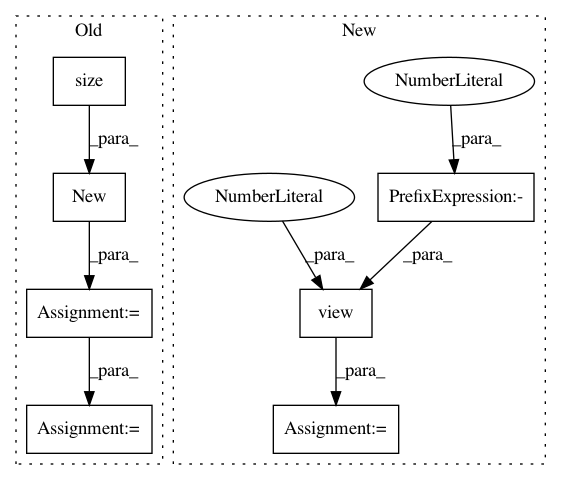

d02077d0a68fbd4d388ea9afbbbcbccb4af78433,examples/mnist_superpixel_75.py,,train,#Any#,67
Before Change
for batch, ((input, adjs, _), target) in enumerate(train_loader):
adj_0, adj_1, adj_2 = adjs[0][0], adjs[2][0], adjs[4][0]
ones = input.new(input.size(0)).fill_(1)
input = torch.stack([input, ones], dim=1)
slice = adjs[4][1][:, 0]
if torch.cuda.is_available():
input, target, slice = input.cuda(), target.cuda(), slice.cuda()
After Change
for batch, ((input, adjs, _), target) in enumerate(train_loader):
adj_0, adj_1, adj_2 = adjs[0][0], adjs[2][0], adjs[4][0]
input = input.view(-1, 1)
// ones = input.new(input.size(0)).fill_(1)
// input = torch.stack([input, ones], dim=1)
slice = adjs[4][1][:, 0]
In pattern: SUPERPATTERN
Frequency: 3
Non-data size: 7
Instances
Project Name: rusty1s/pytorch_geometric
Commit Name: d02077d0a68fbd4d388ea9afbbbcbccb4af78433
Time: 2017-11-08
Author: matthias.fey@tu-dortmund.de
File Name: examples/mnist_superpixel_75.py
Class Name:
Method Name: train
Project Name: pytorch/examples
Commit Name: 645c7c386e62d2fb1d50f4621c1a52645a13869f
Time: 2018-04-24
Author: soumith@gmail.com
File Name: fast_neural_style/neural_style/utils.py
Class Name:
Method Name: normalize_batch
Project Name: rusty1s/pytorch_geometric
Commit Name: d02077d0a68fbd4d388ea9afbbbcbccb4af78433
Time: 2017-11-08
Author: matthias.fey@tu-dortmund.de
File Name: examples/mnist_superpixel_75.py
Class Name:
Method Name: test